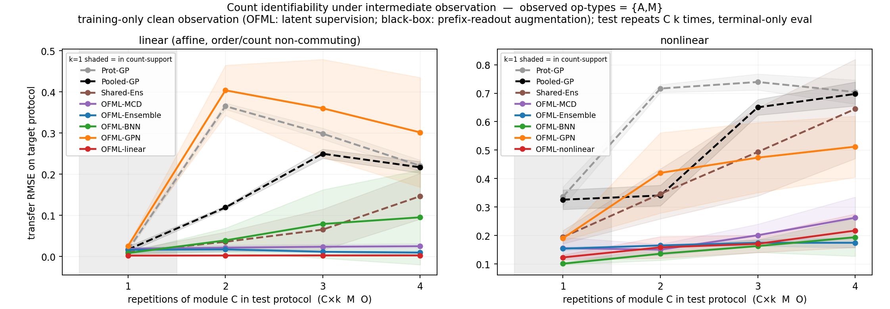
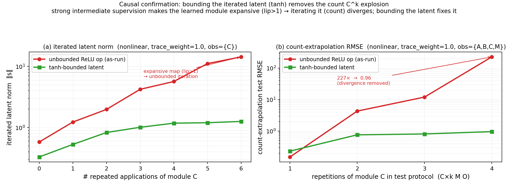

Claim 1 · Intermediate observation repairs the identifiability limit
Supports Claim 1. Intermediate observation \(S=\{A,M\}\) (observing the true latent state immediately after the terminal, at training time only) supplies the identification signal that is missing under terminal measurement alone (\(S=\varnothing\)) and stabilizes the transfer of iterated count \(C^k\). Composed models consume this signal and push the error below the lower bound of the count descriptor, whereas black boxes (Pooled-GP, Prot-GP) remain inactive and flat even when they receive the same observation through a prefix-readout augmentation (because they have no accompanying latent module). We further pin down mechanistically the cause of the sole failure mode that accompanies observation (divergence of the iterated operator \(C^k\)) — gauge freedom of the observer → Lipschitz \(>1\) — and remove it via an architecture selected under an objective combining count stability and order identification. All metrics are macro NRMSE (normalized by each target's own scale).

AM. Count-\(k=4\) transfer of the capacity-matched OFML-nonlinear (\(d=2\)). The count-only regularization regime (traceablation1) diverges with iteration, while the count+order combined regime (traceablation2) stays flat across \(k\). Click to enlarge.Shared-Ens (an order-blind count descriptor) improves slightly near the floor.We test Claim 1, "intermediate observation repairs the identifiability limit — only composed models can use it," on the most iteration-sensitive count testbed (the target repeats the same operation \(C\) \(k\) times). We show it in two parts: (i) repair of identification — intermediate observation \(S=\{A,M\}\) supplies the true identification signal that is missing under terminal measurement alone, and pushes the count-\(k=4\) error of composed surrogate models below the lower bound of the count descriptor. Only composed models can consume this signal; black boxes (Pooled-GP, Prot-GP) stay flat (\(\Delta=0\)) even when the same observation is given through a prefix-readout augmentation. (ii) control of iterated failure — we mechanistically identify the sole failure mode that accompanies observation (divergence of count \(C^k\) when a sharpened operator is iterated under a strong teacher signal; gauge freedom → Lipschitz \(>1\)) and remove it entirely via objective-driven architecture selection. That is, the divergence is not a cost inherent to observation but an artifact of the architecture/regularization.
We reuse the count testbed of Figure 3c. The source is 16 protocols (each operation type at most once, terminating in M O), and the target repeats operation \(C\) \(k\) times as C×k M O (\(k=1,\dots,4\)). An observation subset \(S\subseteq\{A,B,C,M\}\) (all \(2^4=16\) options) is observed at training time only, and evaluation is terminal only (NRMSE of the target terminal readout). The main comparison on this page uses the representative subset \(S=\{A,M\}\), with the primary metric being the most iteration-sensitive count-\(k=4\). 16 subsets × 3 seeds form the statistical unit. Eight surrogate models (6 composed, 1 descriptor, 2 black box) are compared on identical source rows and identical observation information, isolating structure alone. For the divergence control experiment we use the capacity-matched OFML-nonlinear (\(d=2\), deeper n_hidden=2, slower lr=0.002), and line up the Lipschitz constant \(\operatorname{lip}(C)\) over a trace_weight sweep together with the linear-composition, terminal-only, tanh-bounding, and align-free direct-teacher conditions.
Note: the key design principle is that observation is added to the latent as a parallel, non-destructive side branch (op ↓ O_op → y_op) providing only an additional gradient constraint, without altering the forward graph or the composition (analogous to a non-destructive measurement that does not change the specimen). Because black boxes have no corresponding latent module, they are given the same information via a prefix-readout augmentation (the terminal scalar readout of the prefix protocol) — that they still cannot consume it is the crux of Claim 1. The metric is not raw RMSE but macro NRMSE, normalized by each target's own scale (because the count testbed standardizes readouts to their own scale, the raw RMSE in the trace-ablation table below is ≈NRMSE).
| Model | Structure | Consumption of intermediate observation | count-\(k=4\) behavior |
|---|---|---|---|
OFML-linear | Linear composition (identifiable by design; shares a \(2\times2\) matrix per operation type) | Consumable via observer O_op | Immune everywhere (\(\approx 0.00\)) |
OFML-Ensemble | Composed net, seed-only 5-member deep ensemble | Consumed via observer | No divergence; improves with observation |
OFML-MCD | Composed net, MC dropout uncertainty | Consumed via observer | No divergence; improves with observation |
OFML-BNN | Composed net, variational Bayes (weight distribution) | Consumed via observer | Weak with terminal only → greatly improved with observation |
OFML-GPN | Composed net, GP latent (GP-net) | Consumed via observer | Weakest with terminal only → improves with observation (large residual) |
Shared-Ens | Operation-count descriptor based, order-blind shared ensemble | Reflected only partially | Near the descriptor floor → small improvement |
Pooled-GP | Black box, pooled GP over count/prefix inputs | Prefix-readout only, inactive | Flat (\(\Delta=0\)) |
Prot-GP | Black box, protocol-kernel GP | Prefix-readout only, inactive | Flat (\(\Delta=0\)) |
All metrics are macro NRMSE. The prediction \(\mu_p\) and true value \(f_p\) of each target \(p\) are normalized by that target's own scale \(s_p\): \[ \NRMSE_p=\sqrt{\operatorname{mean}_x(\mu_p-f_p)^2 \,/\, s_p^2},\qquad s_p=\sqrt{\operatorname{mean}_x(f_p-\bar f_p)^2}, \] and macro NRMSE is the equally weighted mean over the target set. Iteration sensitivity is measured by the growth of \(\NRMSE\) across \(k\), and the depth effect is tied to the iterated product of the operator gain \(\prod_{i=1}^{k}\operatorname{lip}(C)\) (iterating a Lipschitz \(>1\) map amplifies the latent, and ReLU linear extrapolation outside the training region → divergence). Rather than re-measuring the terminal error at each \(k\), intermediate observation curbs runaway gain as an additional constraint that pins the latent to the true post-op state.
Intermediate observation is realized by placing an observer module O_op at the position of an observed operation type op ∈ S (S ⊆ {A,B,C,M}) and observing its output at training time only. What O_op observes is the true 2-dimensional state immediately after that operation is applied, state*_op = F_op†(z†) (post-op, noise-free) — that is, O_A observes "the \((s_0,s_1)\) right after A is applied," and O_M observes "the state right after M is applied." The terminal observer O is already observed at the terminal, so it is not included in S.
On the OFML side (composed models): each observed operation type is fitted with a separate per-operation-type learnable observer O_op : ℝᵈ→ℝ² (bias-free linear), and the auxiliary loss Σ_{op∈S} ‖O_op(s_op) − state*_op‖² is added to the terminal loss. We do not align to a single shared map, in order to remove its gauge freedom (the non-identification of contractive/expansive realizations) and thereby curb count \(C^k\) divergence. O_op(s) is merely a parallel readout head that maps the latent into 2 dimensions; it only supplies an auxiliary loss and does not rewrite s (O_A is not connected to B; adding observation leaves the forward pass and composition unchanged).
The black box side has no observer: because there is no accompanying latent module, the same information is given via a prefix-readout augmentation — for each observed position t, a training row is added that observes the terminal readout of the prefix protocol op₁ … op_t O as a scalar y = readout(state*_after_t). Thus O_A, O_B, O_C, O_M are OFML-specific, and the black box receives only the scalar readout of the prefix (and still cannot consume it, staying flat).
We reuse the count testbed of Fig 3c (16 source, target C×k M O). The observation subset S ⊆ {A,B,C,M} (all 16) is observed at training time only (evaluation is terminal only). The figure shown is the example for observation subset AM.
| Element | Value | Property |
|---|---|---|
| source | 16 protocols (each operation ≤1, terminating in M O) | Trained on the terminal readout |
| target | C×k M O (\(k=1..4\)) | Evaluation terminal only (NRMSE) |
| intermediate observation \(S\) | \(\subseteq\{A,B,C,M\}\) (all 16) | Training time only, post-op true value 2D, noise-free |
| seed | 3 (per subset) | Main statistical unit (16×3) |
| divergence control | OFML-nonlinear \(d=2\), n_hidden=2, lr=0.002 | Capacity-matched (no slack latent) |
OFML-nonlinear is capacity-matched): FA=(2σ(2.4s₀−0.8s₁+0.1)−0.8, s₁), FB=(s₀, 2σ(2.0s₁+0.7s₀−0.2)−0.8), FC=(1.2·ss(2.2s₀+0.8s₁−1.0), 1.2·ss(2.0s₁−0.6s₀−0.6)) (contractive, Lipschitz<1), FM=(s₀+0.4tanh(s₀−s₁), s₁+0.4tanh(s₀+s₁)), readout y=1.4·ss(2s₀−1.6s₁+1.2s₀s₁−0.1)+0.25·sin(2π(s₀−s₁)) (the high-frequency sin term is an irreducible difficulty lower bound). The key point is that the true \(C\) is contractive (\(\operatorname{lip}<1\)): the divergence originates not from the data but from the teacher signal pushing the gain of \(C\) above 1.Hover the cursor over a module type to highlight the same shared operation across all protocols (= weight sharing).
Intermediate observation pushes the error of composed models down, while black boxes stay flat. When \(S=\{A,M\}\) is observed, all 6 composed OFML models lower their count-\(k=4\) NRMSE (e.g., OFML-BNN 0.28→0.10, OFML-GPN 0.46→0.30, OFML-Ensemble 0.05→0.01). The design-identifiable OFML-linear is immune from the start (0.01→0.00). The order-blind Shared-Ens improves slightly near the descriptor floor (0.24→0.15). By contrast, the black boxes are inactive: Pooled-GP 0.22→0.22, Prot-GP 0.22→0.22 (\(\Delta=0\)) — they cannot consume the same observation information even when it is delivered via the prefix-readout.
| Model | \(\varnothing\) (terminal only) | \(S=\{A,M\}\) | \(\Delta\) |
|---|---|---|---|
| OFML-linear | 0.01 | 0.00 | 0.01 |
| OFML-Ensemble | 0.05 | 0.01 | 0.04 |
| OFML-MCD | 0.04 | 0.02 | 0.02 |
| OFML-BNN | 0.28 | 0.10 | 0.18 |
| OFML-GPN | 0.46 | 0.30 | 0.16 |
| Shared-Ens (order-blind count) | 0.24 | 0.15 | 0.09 |
| Pooled-GP (black box) | 0.22 | 0.22 | 0.00 |
| Prot-GP (black box) | 0.22 | 0.22 | 0.00 |
Iterated failure (count \(C^k\) divergence) can be removed in the combined regime. We verify the sole failure mode under observation with the capacity-matched OFML-nonlinear (\(d=2\)). While the count-only regularization regime (traceablation1, reg-BO) diverges on all subsets, the count+order combined regime (traceablation2, combined-BO) stays flat. The worst \(k=4\) across the 16 subsets drops 14.59 → 1.25, and the number of divergences (error>2) drops 5/16 → 0/16.
| Observation subset | reg-BO (traceablation1) | combined-BO (traceablation2) |
|---|---|---|
| AM | 14.59 (diverges) | 0.22 |
| CM | 14.21 (diverges) | 0.58 |
| ACM | 14.22 (diverges) | 0.92 |
| BC | 2.94 (diverges) | 0.51 |
| BCM | 2.04 (diverges) | 0.53 |
| worst value across the 16 subsets | 14.59 | 1.25 |
| number of divergences (error>2) | 5/16 | 0/16 |

Mechanism of the failure mode (§8.4). The true \(C\) is contractive (\(\operatorname{lip}<1\)), but a strong trace teacher signal pins \(C\) pointwise to the true output on the training region, and a ReLU MLP can fit that map with a Lipschitz gain exceeding 1. Empirically, \(\operatorname{lip}(C)\) also rises monotonically 0.8→2.1 as trace_weight goes 0→1 (the teacher signal, not the data, pushes the gain up). Iterating a map with gain \(>1\) amplifies the latent, and once it leaves the training region the ReLU extrapolates linearly and diverges. The root cause is the gauge (reparameterization) freedom of the observer. Confirmations: (1) over a trace_weight sweep \(\operatorname{lip}(C)\) rises monotonically 0.8→2.1, (2) linear composition is immune and terminal only is also immune, (3) bounding the latent with tanh removes the divergence even at trace_weight=1.0, (4) align-free direct teaching gives Lipschitz 17→1.2.
This result supports Claim 1 in two parts. First, intermediate observation is a genuinely usable signal: it makes the covered/order-constrained cases identifiable and pushes the count-\(k=4\) error below the lower bound of the count descriptor — and only composed surrogate models can consume it, while black boxes (Pooled-GP, Prot-GP) stay flat at \(\Delta=0\) even when given the same prefix-readout (because they have no accompanying latent module). Second, the sole caveat under observation (count \(C^k\) divergence from over-sharpening the iterated operator) is understood mechanistically and removed via objective-driven architecture selection: when the trace-learning architecture is chosen under an objective combining count stability and order identification, the capacity-matched \(d=2\) OFML-nonlinear does not diverge on any of the 16 subsets, using none of latent slack, bounded activations, or an explicit Lipschitz penalty (worst \(k=4\) 14.6→1.25, divergences 5/16→0/16).
Summarized as a rebuttal, this failure is an artifact of the architecture/regularization, not a cost inherent to observation. Therefore the core of Claim 1 — "the repair of identifiability that intermediate observation brings" — holds without caveat. Related observation pages are Figure 6 (\(s0\) observation ablation), Figure 7 (order, linear), and Figure 8 (order, nonlinear); for the terminal-side identification limit see Claim 1, for the sharp advantage of composition see Figure 3c (count), and for the cost-indexed positioning see Figure 2.
Note on limitations: Table 9 extracts count-\(k=4\) for the representative subset \(S=\{A,M\}\), averaged over 16 subsets × 3 seeds. The black boxes' \(\Delta=0\) does not mean "cannot use observation at all" but rather "no significant improvement even when given the equivalent information as a prefix-readout augmentation" (because the design has no latent composition). The raw RMSE in the divergence-control table is standardized to its own scale on the count testbed and thus approximates NRMSE, but the large divergence values (e.g., 14.59) are a metric in a numerically saturated region and should be read only as ordinal information. \(\operatorname{lip}(C)\) is a finite-difference estimate on the training region.
The reason iterated \(C^k\) divergence can be curbed under observation is that intermediate observation mitigates the growth of depth (the Lipschitz product) (Proposition 6: error amplification along composition depth is bounded above by the product of operator gains \(\prod_i\operatorname{lip}\), and intermediate observation pins the latent of each stage to the true post-op state to remove runaway gain). The identification signal that intermediate observation supplies itself amounts to an operation that actively fills in the missing component of the rank condition for identifiability (Proposition 4), corresponding to the recovery of target terminal-response consistency (Theorem 3, Proposition 5). That the black boxes cannot use this signal can be read as their lacking the pushed-forward latent composition structure (Lemma 6).